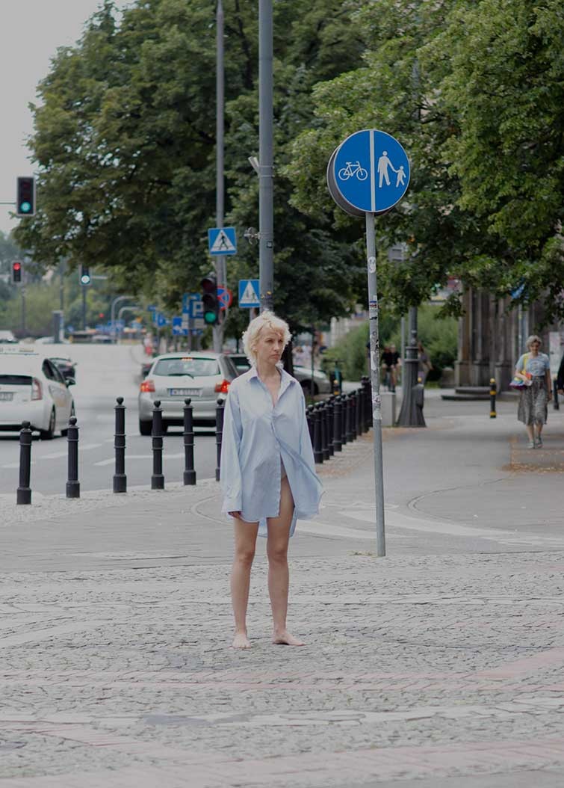
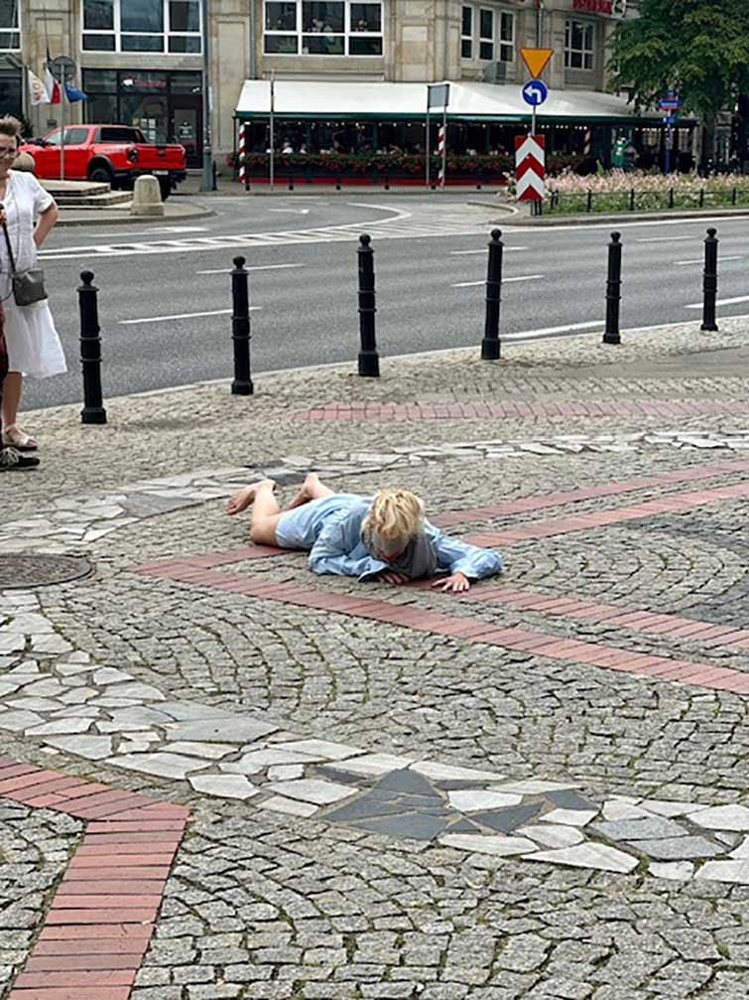
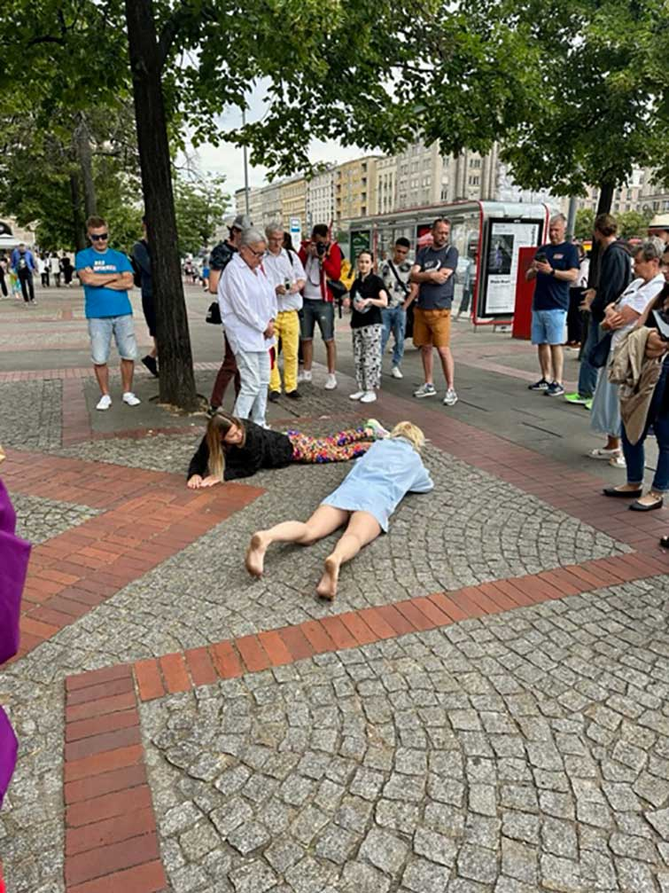
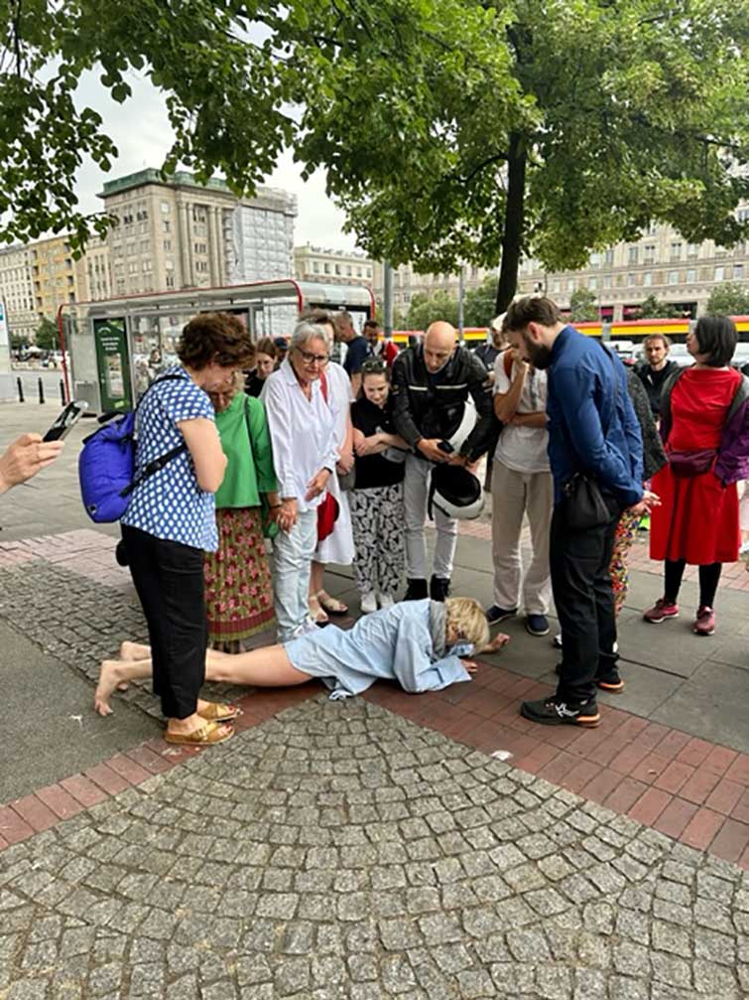
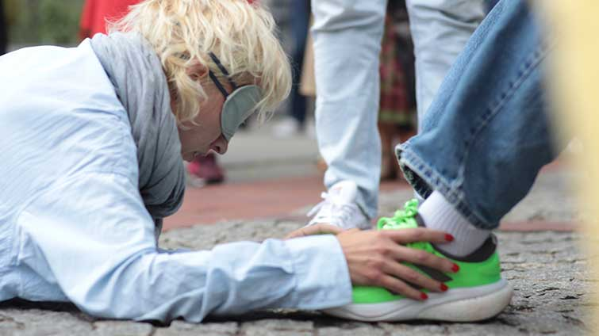
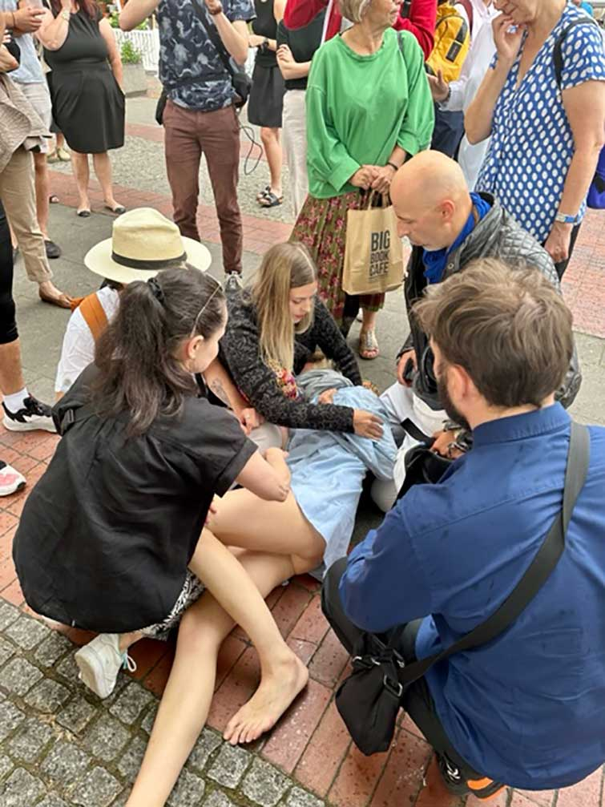
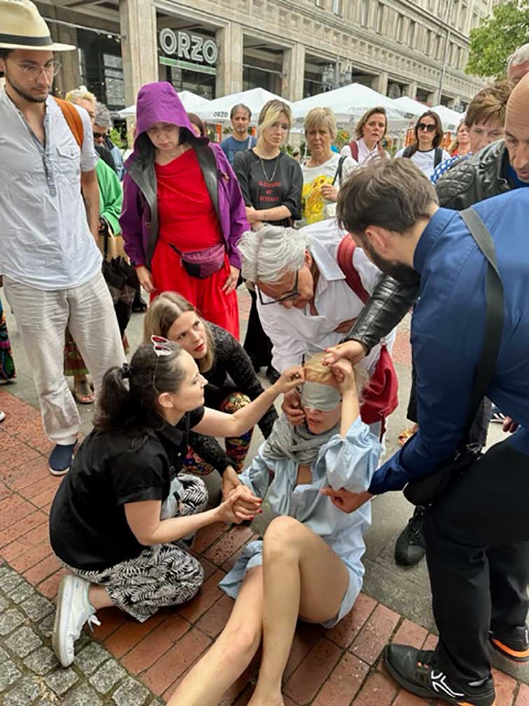
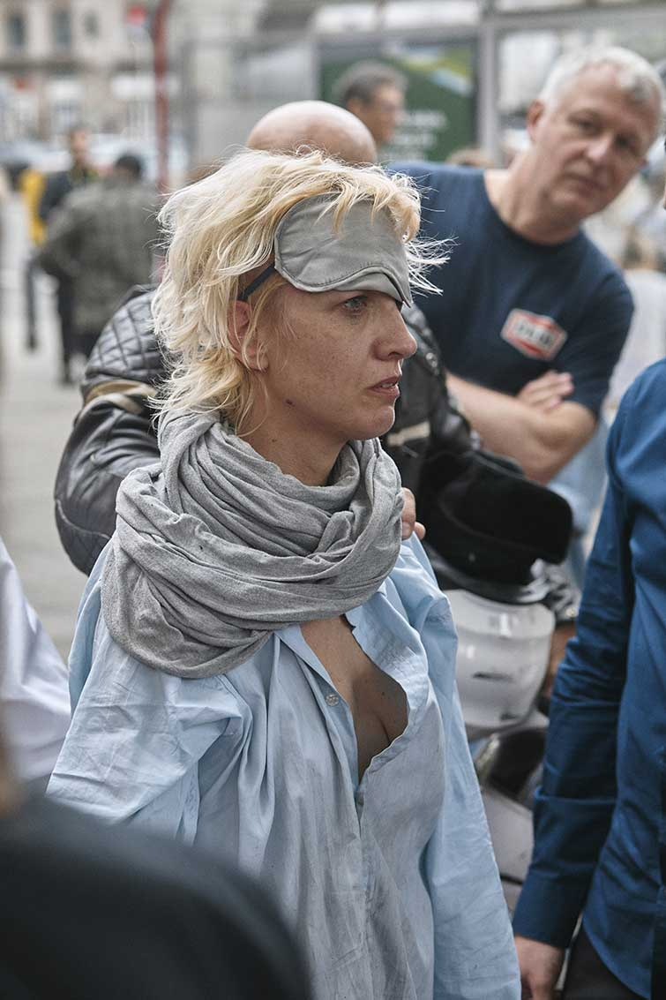
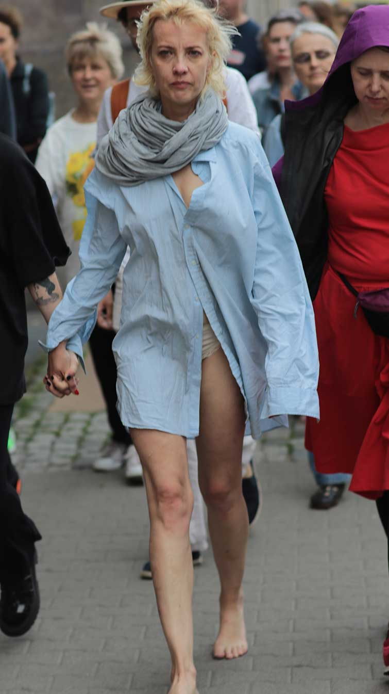
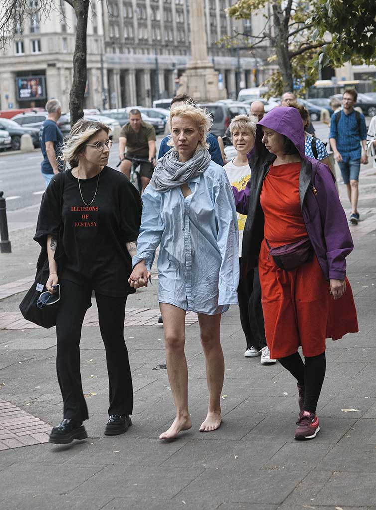

KAZDE 5 MINUT










Performance odbyl sie w ramach BigBook Festival Warszawa 2023
Publicznosc/odbiorcy i odbiorczynie zostali zaproszeni na performance do siedziby BigBook'a gdzie zostali poinformowani, ze jestem gdzies sama na Placu Konstytucji i musza mnie znalezc.
Performance trwal okolo 30 minut.
Czy KAZDE 5 MINUT samotnosci musi byc bolesne? Czy KAZDE 5 MINUT snu, ktory mozna uznac za predoswiadczenie stanu smierci, jest samotnoscia?
Kiedy ktos odchodzi, opuszcza nas, porzuca, umiera; kiedy my wybieramy, ze zostaniemy sami/same - zaczyna sie samotnosc.
W jezyku angielskim istnieja dwa okreslenia tego stanu.
Loneliness to samotnosc bolesna, klujaca, teskniaca, a solitude to ta budujaca, wzmacniajaca, kreujaca.
kamera i montaz: Adrian Cieszkowski
fot. Michal Idzikowski, Katarzyna Ostrowska